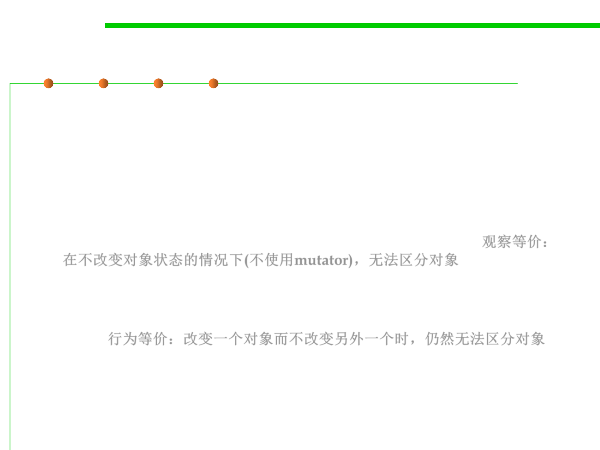

Equality of Mutable Types
3.5 Equality in ADT and OOP
▪ Equality: two objects are equal when they cannot be distinguished
by observation.
▪ With mutable objects, there are two ways to interpret this:
– observational equality means that two references cannot be distinguished
by code that doesn’t change the state of either object, i.e., by calling only
observer, producer, and creator methods. This tests whether the two
references “look” the same in the current state of the program. 观察等价：
在不改变对象状态的情况下(不使用mutator)，无法区分对象
– behavioral equality means that two references cannot be distinguished by
any code, even if a mutator is called on one but not the other. This tests
whether the two references will “behave” the same, in this and all future
states. 行为等价：改变一个对象而不改变另外一个时，仍然无法区分对象
▪ Note: for immutable objects, observational and behavioral equality
are identical, because there aren’t any mutator methods.